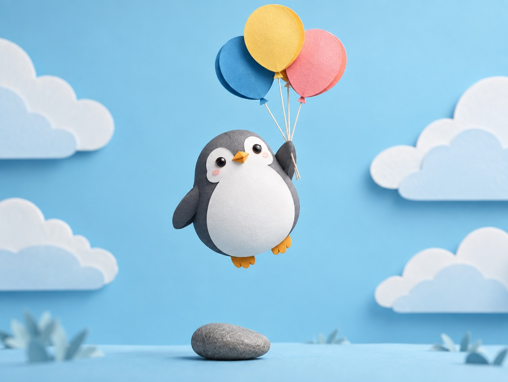

🐧 EVERYDAY LIFE⚡ 20 SEC
The more "shoulds" you carry, the stricter you are with everyone 🎈

Should Stones
We have many "shoulds," like "It should be this way" and "I should finish what I start."
Never Enough
The more "shoulds" you have, the harder it is to accept yourself when you are not perfect.
And you become strict with people around you, too.
⚡ TRY IT
Turn "should" into "it would be nice"
"Should" stones hold the penguin down. Tap a stone to change the words.
🎈 So light! Kind to yourself, and kind to others, too.
Hard to Hear
For a perfectionist like me, this is hard to hear.
Nothing Gained
There is nothing you gain from "shoulds."
📚 I learned this from the Japanese blog "Panda no Ondo".
PREVIOUS POST
It is OK to feel annoyed, because we are only human